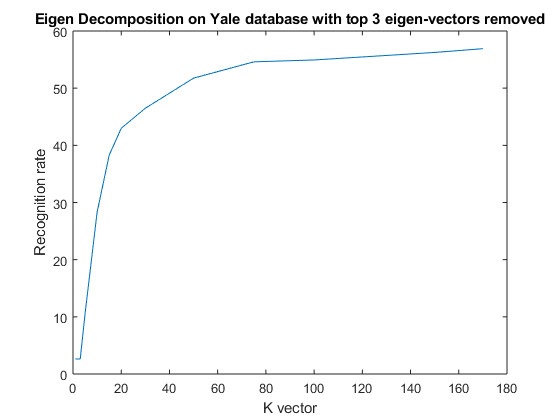

function [] = facerecognition_yale_eigen_3eigendiff()
listing = dir('../../CroppedYale');
x={listing.name};
count = 1;
identity = zeros(1520,1);
for i = 1:1:39
if(i<14)
filename = strcat(['../../CroppedYale/' x{i+2} ]);
for j=1:1:40
listing2 = dir(filename);
y={listing2.name};
filename2 = strcat([filename '/' y{j+2} ]);
img = imread(filename2);
img = reshape(img,[],1);
training_set(:,count) = img(:);
identity(count) = i;
count = count + 1;
end
elseif(i>14)
filename = strcat(['../../CroppedYale/' x{i+1} ]);
for j=1:1:40
listing2 = dir(filename);
y={listing2.name};
filename2 = strcat([filename '/' y{j+2} ]);
img = imread(filename2);
img = reshape(img,[],1);
training_set(:,count) = img(:);
identity(count) = i;
count = count + 1;
end
end
end
mean = transpose(sum(transpose(training_set)))./(1520);
for i = 1:1:1520
mean_centered_training_set(:,i) = double(training_set(:,i)) - mean;
end
k_vector = [1, 2, 3, 5, 10, 15, 20, 30, 50, 75, 100, 150, 170];
recognition_vector = zeros(size(k_vector));
for k = 1:1:size(k_vector,2)
[V, D] = eig(mean_centered_training_set'*mean_centered_training_set);
U = mean_centered_training_set*V;
for i=1:1:1520
U(:,i) = U(:,i)/norm(U(:,i));
end
U = U(:,end-4:-1:1520-k_vector(k));
eigen_coeff_training = U'*mean_centered_training_set;
recognition_rate = 0;
for i = 1:1:39
if(i < 14)
filename = strcat(['../../CroppedYale/' x{i+2} ]);
listing2 = dir(filename);
y={listing2.name};
for j=41:1:size(y,2)-2
filename2 = strcat([filename '/' y{j+2} ]);
img = imread(filename2);
img = reshape(img,[],1);
eigen_coeff_testing = U'*(double(img(:)) - mean);
diffs = pdist2(eigen_coeff_testing', eigen_coeff_training');
[minimum_diff, minimum_id] = min(diffs);
recognition_rate = recognition_rate + (i==identity(minimum_id));
end
end
if(i > 14)
filename = strcat(['../../CroppedYale/' x{i+1} ]);
listing2 = dir(filename);
y={listing2.name};
for j=41:1:size(y,2)-2
filename2 = strcat([filename '/' y{j+2} ]);
img = imread(filename2);
img = reshape(img,[],1);
eigen_coeff_testing = U'*(double(img(:)) - mean);
diffs = pdist2(eigen_coeff_testing', eigen_coeff_training');
[minimum_diff, minimum_id] = min(diffs);
recognition_rate = recognition_rate + (i==identity(minimum_id));
end
end
end
recognition_vector(k) = 100*recognition_rate/912;
fprintf ('K_vector= %d,Recogniton rate = %f\n',k_vector(k),recognition_vector(k));
end
plot(k_vector, recognition_vector);
xlabel('K vector');
ylabel('Recognition rate');
title('Eigen Decomposition on Yale database with top 3 eigen-vectors removed');
end
K_vector= 1,Recogniton rate = 2.631579
K_vector= 2,Recogniton rate = 2.631579
K_vector= 3,Recogniton rate = 2.631579
K_vector= 5,Recogniton rate = 10.526316
K_vector= 10,Recogniton rate = 28.289474
K_vector= 15,Recogniton rate = 38.267544
K_vector= 20,Recogniton rate = 42.982456
K_vector= 30,Recogniton rate = 46.491228
K_vector= 50,Recogniton rate = 51.754386
K_vector= 75,Recogniton rate = 54.605263
K_vector= 100,Recogniton rate = 54.934211
K_vector= 150,Recogniton rate = 56.250000
K_vector= 170,Recogniton rate = 56.907895
